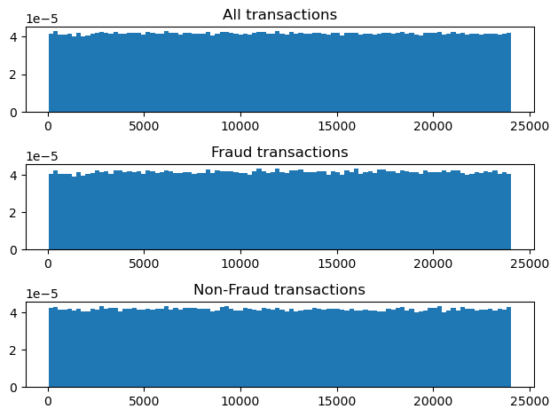
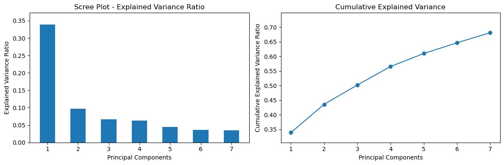
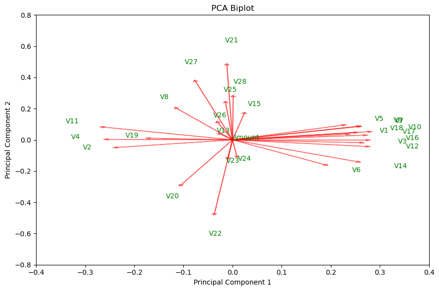
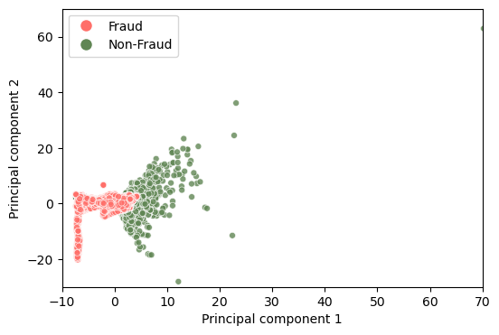
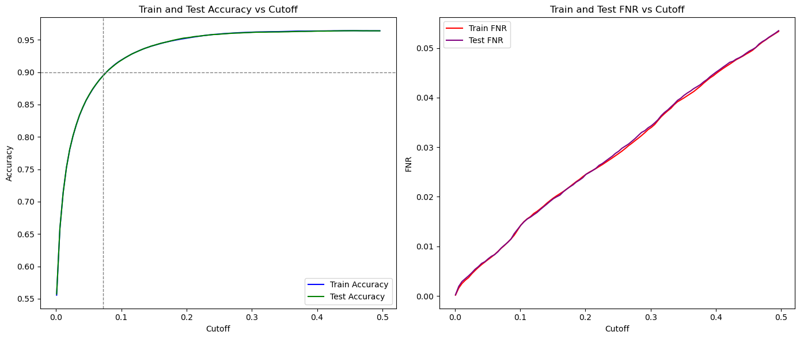

Credit Card Fraud Prediction
A walkthrough of the modeling process
Exploratory Data Analysis (EDA)
The first step is the explore our data set to see if we can gain any insight about the data. The obvious first, and only, choice is to look at "Amount".

From the above histograms, we can see that there is absolutely no association between amount and fraudulent credit card transactions. But doing this for all 28 other features would be time-consuming and impractical.
Pricipal Component Analysis (PCA)
PCA provides us with multiple benefits: - Dimensionality Reduction (Model Complexity Reduction) - Decreased Overfitting - Handles Multicollinearity The Scree Plot and Cumulative Explained Variance plots below demonstrate how much each principal component accounts for explained variance.

The plots show that the 1st principal component("PC1") accounts for 33%, of the explained variance. All following principal components account for <11% of explained variance. Because "PC1" is so important, we want to now find which features most greatly correlate to "PC1".

The features which most strongly correlate to "PC1" are the features whose vector arrows are the larger along the x-axis. We can also view "PC1`"" vs. "PC2" by looking at all the data.

It is interesting to see that just "PC1" and "PC2" almost perfectly split the fraud and non-fraud transactions. Based on the PCA Biplot, we select our variables as well as define out target feature column matrix.
From this exploration we have elected the following features to be used in our model:
'V1','V2','V3','V4','V5','V6','V7','V9','V10','V11','V12','V14','V16','V17','V18','V19'
Modeling - Logistic Regression
Since we are dealing with a binary classification problem (fraud or not fraud), logistic regrression is by far the best approach.
We used "Scikit-Learn" as our modeling package. Our hyperparameters selected we as follows:
- LOSS function = logit
- max iterations = 10,000
- learning rate = 'optimal'
This is where things get interesting. We want to avoid false negatives at all cost while perserving a streamlined payment experience to customers. In this case, a false negative is when our model classifies "no fraud" when in reality the transacton was fraudulent. Think of the model as being the text message fraud alert system your bank uses. When it detects an unusual transaction, it asks you for further confirmation, or outright blocks the transaction. To this end, we want to select at what probability of fraud should we classify as fraud. This "cutoff" needs to be where we minimize the false negative rate while preserving as much overall accuracy as possible. By default, the cutoff is 0.5, and this produces the highest overall accuracy. So how much accuracy loss are we willing to accept to reduce the false negative rate?
We can illustrate this tradeoff with the following graph:

We can see that cutoff is approximately linear to false negative rate. We alse see that if we are okay with lowering the accuracy to roughly 90%, we can use a cutoff of about 0.078 to maintain accuracy and lower the false negative rate.
We have successfully found a cutoff for our model that minimizes out false negative rate, while preserving above a 90% accuracy in both the testing data sets.
Note that the train/test split and gradient descent in the logistic model had a fixed random_state for reproducibility.